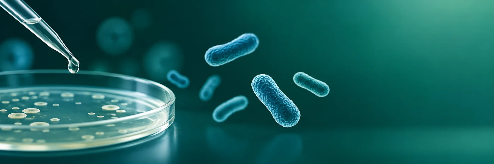

01 / RESEARCH FOCUS
Functional Foods and Probiotics
We study fermented foods, probiotic microorganisms, and their health-promoting molecules to inform the development of functional foods, with emphasis on food quality, safety, nutritional value, and public health.
Read more →